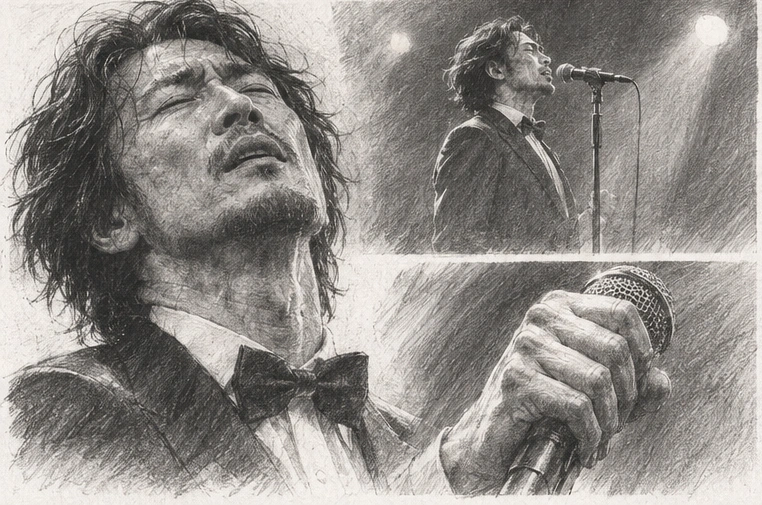
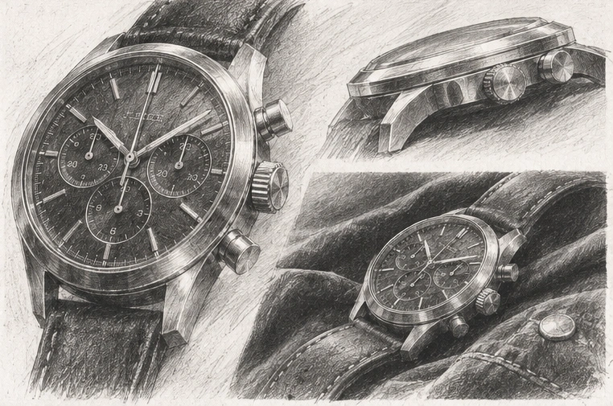
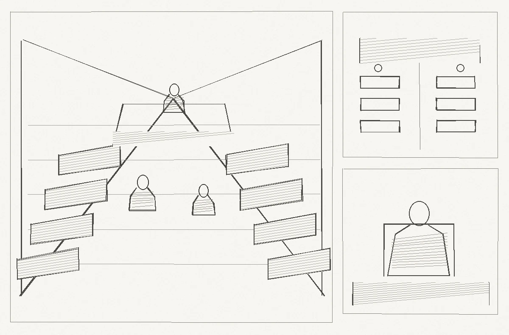

Des études graphiques réalisées pour cette édition du portfolio.
 Graphite généré · Étude rétrospectiveDu visage au plan large. Échelle du face-à-face et détail de la main.
Graphite généré · Étude rétrospectiveDu visage au plan large. Échelle du face-à-face et détail de la main.
Graphite généré · Étude rétrospectiveChant, lumière de scène et tension de la main sur le microphone.
Graphite généré · Étude rétrospectiveModèle de la montre. Études du cadran, du profil et de ses reflets.
Schéma de composition · Illustration libreDisposition du tribunal, axes de regard et place des personnages. Planche fournie · Études exploratoiresVisage, anatomie et séquence de redressement.
Planche fournie · Études exploratoiresVisage, anatomie et séquence de redressement.